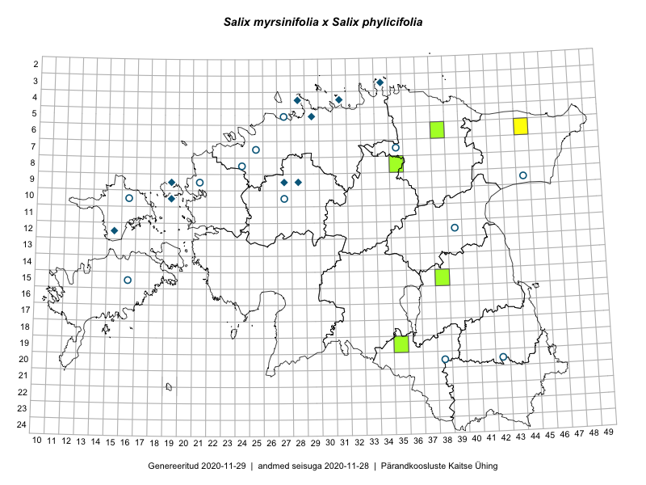

Salix myrsinifolia × Salix phylicifolia — mustjas paju × kahevärviline paju
Salicaceae :: Salix myrsinifolia × S. phylicifolia (55)

Kaart põhineb 55 kirjel:
vaatlusi 5
herbaareksemplare 50
Taime kaasaegsed ja ajaloolised leiukohad asuvad 26 ruudus.
Tingmärgid ja leidudega ruutude arvud periooditi uues (u) ja 2005 andmestikus (v)
| █ | vahemik | u1 | v2 |
|---|---|---|---|
| █ | 2006–2020 | 5 | – |
| ◆/◇ | 1971–2005 | 9 | 0 |
| ○ | 1921–1970 | 12 | 0 |
| + | kuni 1920 | 0 | 0 |
| × | hävinud | – | 0 |
| ? | kaheldav | – | 0 |
| Ruut | Leidja(d) | Leiuaeg | Kirje |
|---|---|---|---|
| 15-38 | Karin Kaljund, Kaire Lanno | 2016-07-20 | TAA0144323: Salix myrsinifolia × S. phylicifolia |
| 19-35 | Peedu Saar, Sirje Azarov | 2016-07-19 | TAA0133990: Salix myrsinifolia × S. phylicifolia |
| 06-38 | Kaili Orav, Silvia Pihu | 2015-07-20 | ruut/ala: Salix myrsinifolia × S. phylicifolia |
| 06-38 | Kaili Orav, Silvia Pihu | 2015-07-20 | TAA0134836: Salix myrsinifolia × S. phylicifolia |
| 08-35 | Jana-Maria Habicht | 2015-07-14 | TAM0118746: Salix myrsinifolia × S. phylicifolia |
| 08-35 | Jana-Maria Habicht | 2015-07-14 | TAM0118748: Salix myrsinifolia × S. phylicifolia |
| 06-44 | Toomas Kukk, Peedu Saar | 2014-09-11 | punkt: Salix myrsinifolia × S. phylicifolia |
| 05-29 | H. Aasamaa | 2000-09 | TAM0125821: Salix myrsinifolia × S. phylicifolia |
| 05-29 | Heinrich Aasamaa | 2000-06-22 | TAM0130754: Salix myrsinifolia × S. phylicifolia |
| 05-29 | Heinrich Aasamaa | 1999-10-08 | TAM0130767: Salix myrsinifolia × S. phylicifolia |
| 05-29 | Heinrich Aasamaa | 1999-10-08 | TAM0130768: Salix myrsinifolia × S. phylicifolia |
| 05-29 | Heinrich Aasamaa | 1999-10-08 | TAM0130769: Salix myrsinifolia × S. phylicifolia |
| 09-27 | Heinrich Aasamaa | 1998-07-18 | TAM0130752: Salix myrsinifolia × S. phylicifolia |
| 09-27 | Heinrich Aasamaa | 1998-07-18 | TAM0130753: Salix myrsinifolia × S. phylicifolia |
| 09-27 | H. Aasamaa | 1996-07-25 | TAM0125819: Salix myrsinifolia × S. phylicifolia |
| 09-27 | H. Aasamaa | 1996-07-25 | TAM0125820: Salix myrsinifolia × S. phylicifolia |
| 09-27 | Heinrich Aasamaa | 1996-07-19 | TAM0130771: Salix myrsinifolia × S. phylicifolia |
| 09-28 | Heinrich Aasamaa | 1996-07-12 | TAM0130758: Salix myrsinifolia × S. phylicifolia |
| 05-29 | Jaak Sultson | 1995-09-09 | TALL A010008: Salix myrsinifolia × S. phylicifolia |
| 09-27 | Heinrich Aasamaa | 1995-08-11 | TAM0130766: Salix myrsinifolia × S. phylicifolia |
| 12-15 | Toomas Kukk | 1995-07-21–1997-07-21 | ruut/ala: Salix myrsinifolia × S. phylicifolia |
| 09-19 | Toomas Kukk, Mare Leis | 1993-08-21–1998-09-22 | ruut/ala: Salix myrsinifolia × S. phylicifolia |
| 10-19 | Toomas Kukk, Elle Roosaluste | 1993-06–1998-05-31 | ruut/ala: Salix myrsinifolia × S. phylicifolia |
| 10-19 | Toomas Kukk | 1992-07-16 | TAA0099374: Salix myrsinifolia × S. phylicifolia |
| 03-34 | A. Toomel | 1980-08-18 | TAA0099373: Salix myrsinifolia × S. phylicifolia |
| 03-34 | A. Toomel | 1980-07-10 | TAA0099375: Salix myrsinifolia × S. phylicifolia |
| 04-28 | Linda Viljasoo | 1973-08-19 | TAA0099370: Salix myrsinifolia × S. phylicifolia |
| 04-28 | Linda Viljasoo | 1973-08-19 | TAA0099371: Salix myrsinifolia × S. phylicifolia |
| 04-31 | H. Rebassoo | 1973-06-08 | TAA0099379: Salix myrsinifolia × S. phylicifolia |
| 10-16 | M. Kask | 1970-07-13 | TAA0099376: Salix myrsinifolia × S. phylicifolia |
| 09-21 | Heinrich Aasamaa | 1969-08-28 | TAM0130776: Salix myrsinifolia × S. phylicifolia |
| 09-21 | Heinrich Aasamaa | 1969-08-28 | TAM0130777: Salix myrsinifolia × S. phylicifolia |
| 09-21 | H. Aasamaa | 1969-08-28 | TAM0125818: Salix myrsinifolia × S. phylicifolia |
| 12-39 | Liivia Laasimer | 1966-06-14 | TAA0099372: Salix myrsinifolia × S. phylicifolia |
| 08-24 | Visolde Puusepp | 1960-08-04 | TAA0099388: Salix myrsinifolia × S. phylicifolia |
| 05-27 | M. Lätt, H. Tamm | 1960-08 | TAA0099377: Salix myrsinifolia × S. phylicifolia |
| 20-42 | M. Kask | 1960-06-07 | TAA0099382: Salix myrsinifolia × S. phylicifolia |
| 20-42 | M. Kask | 1960-06-07 | TAA0099383: Salix myrsinifolia × S. phylicifolia |
| 20-42 | M. Kask | 1960-06-07 | TAA0099384: Salix myrsinifolia × S. phylicifolia |
| 09-44 | Linda Viljasoo, H. Karu | 1959-10-06 | TAA0099380: Salix myrsinifolia × S. phylicifolia |
| 09-44 | Linda Viljasoo, H. Karu | 1959-10-06 | TAA0099381: Salix myrsinifolia × S. phylicifolia |
| 15-16 | H. Karu | 1959-07-16 | TAA0099389: Salix myrsinifolia × S. phylicifolia |
| 07-25 | H. Rebassoo | 1958-08-28 | TAA0099378: Salix myrsinifolia × S. phylicifolia |
| 07-35 | Taisi Belajeva | 1958-08-07 | TAA0099390: Salix myrsinifolia × S. phylicifolia |
| 10-16 | H. Tamm, H. Karu | 1958-06-12 | TAA0099385: Salix myrsinifolia × S. phylicifolia |
| 10-16 | H. Tamm, H. Karu | 1958-06-12 | TAA0099386: Salix myrsinifolia × S. phylicifolia |
| 20-38 | M. Kask | 1957-08-23 | TAA0099387: Salix myrsinifolia × S. phylicifolia |
| 10-27 | Heinrich Aasamaa | 1936-08-22 | TAM0130770: Salix myrsinifolia × S. phylicifolia |
| 10-27 | Heinrich Aasamaa | 1936-07-09 | TAM0130749: Salix myrsinifolia × S. phylicifolia |
| 10-27 | Heinrich Aasamaa | 1936-07-08 | TAM0130743: Salix myrsinifolia × S. phylicifolia |
| 10-27 | Heinrich Aasamaa | 1936-07-08 | TAM0130744: Salix myrsinifolia × S. phylicifolia |
| 10-27 | Heinrich Aasamaa | 1936-07-08 | TAM0130745: Salix myrsinifolia × S. phylicifolia |
| 10-27 | Heinrich Aasamaa | 1936-07-08 | TAM0130746: Salix myrsinifolia × S. phylicifolia |
| 10-27 | Heinrich Aasamaa | 1936-07-08 | TAM0130747: Salix myrsinifolia × S. phylicifolia |
| 10-27 | Heinrich Aasamaa | 1936-07-08 | TAM0130748: Salix myrsinifolia × S. phylicifolia |
Ruutude arv uue atlase andmekogu järgi. Muuhulgas arvestab vanemat herbaariumi, 2005. aasta atlase välitöölehtedelt uuesti digitaliseeritud andmeid jne. Uue atlase andmekogust pärinevad andmed on kaardile kantud siniste sümbolitega.↩︎
Ruutude arv 2005. aasta atlase (Kukk, T., Kull, T., Eesti taimede levikuatlas. Eesti Maaülikool, Põllumajandus- ja Keskkonnainstituut, Tartu, 2005) järgi. Andmeallikana on kasutatud levik.exe programmi, kus igas ruudus on registreeritud vaid uusim leid. Seetõttu on vanemate perioodide kohta andmed puudulikud. Kasutatud levik.exe andmestikus leidub mõningaid kõrvalekaldeid atlase trükis ilmunud versioonist, sagedamini tarnade ja käpaliste seas. Lisaks leidub selles andmestikus valik liike (peamiselt väheste leidudega tulnuktaimed), mille kaarte trükis ei avaldatud. Vana atlase andmed ruutudest, milles ei ole uue atlase andmekogus leide enne 2006. aastat, on kaardil esitatud punaste sümbolitega. Vana atlase andmetel hävinud ja kaheldavaid leiukohti pole hilisemate (taas)leidude põhjal korrigeeritud.↩︎